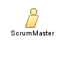

|
| O ScrumMaster é o responsável por garantir que o Scrum Team se oriente pelos valores e práticas do Scrum. O ScrumMaster protege o time certificando-se de que os membros não se comprometam com compromissos além dos que eles conseguem cumprir dentro de um Sprint. O ScrumMaster facilita o Daily Scrum e se torna o responsável pela remoção de quaisquer obstáculos observados pelo time durante estas reuniões. |
| Role Sets: Papéis Scrum-X |
|
Relationships
 |
| Additionally Performs |
|
Main Description
O ScrumMaster:
- Representa a gestão do projecto (ligação);
- É responsável por difundir os valores do Scrum e suas práticas;
- Executa as reuniões Daily Scrum;
- Remove os impedimentos;
- Protege o time contra interferências externas;
- Assegura que o time esteja totalmente funcional e produtivo; e
- Possibilita uma cooperação estreita entre todos os papéis e funções.
|
Staffing
| Assignment Approaches | O papel ScrumMaster é, normalmente, exercido por um gerente de projetos ou um líder técnico, mas pode ser desempenhado por qualquer um. |
Key Considerations
O ScrumMaster:
- não é o gerente de projetos, mas um líder facilitador que gerencia processos Scrum;
- monitoria as tarefas do Sprint para assegurar o sucesso do Sprint, mas não cria/atribui tarefas - o time é quem as cria/atribui;
- é parte do time: divide responsabilidades com outros membros;
- deve, regularmente, fisicamente, reunir-se com os demais membros do time.
|
Este programa e o material que o acompanha são disponibilizados sob a
Eclipse Public License v1.0 que acompanha esta distribuição.
Copyright © 1998--2008 Mountain Goat Software. Todos os Direitos Reservados.
Copyright © 2008 ATSC. Todos os direitos reservados. |
|